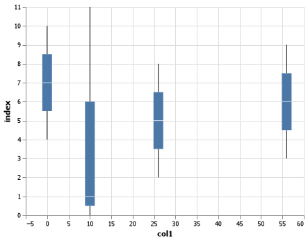

CSE 250 Coding Challenge
Aj Averett
Challenge Summary
This was an enjoyable set of challenges
Challenge 1
For this challenge, I gathered the data for 'Peter' based on Oregon and Utah. I then added extra elements as seen in the code below.
all = ((peter_freq_chart_or + peter_freq_chart_ut + line_plot_1 + line_plot_2 + line_plot_3 + text1 + text2 + text3) .properties( title= { "text": ["The History of Peter for UT (red) and OR (orange) "], #"subtitle": ['Super cool subtitle'] }, width = 500) .configure_title(anchor='start' ))
Answer
![]()
Challenge 2
For this challenge, I was unable to finish, but I was able to have the data ready for a boxplot.
temp = (temp['col1'] .str.split('-', expand = True) .rename(columns={0: "col1",1: "col2"}) .reset_index() )
Answer

Challenge 3
For this challenge, I replaced the lost values with NaN's and replaced them with 125. I then found the mean.
mister[0] = (mister[0] .replace('lost',np.nan) .fillna(125) ) reported_mean = round(mister[0].mean(), 2)
Answer
59.83
Challenge 4
For this challenge, I replaced the Gender column with numerical values. I then rand the GradientBoostingClassifier model.
clf = GradientBoostingClassifier(random_state = 2020).fit(X_train, y_train) ) ... best_features = feature_df.sort_values(['importance'],ascending = False).head(10).reset_index(drop=True)
Answer
Below are the 10 best features for predicting Gender with Star Wars data. This was 60.7 percent accurate.
| features | importance | |
|---|---|---|
| 0 | rank__i__the_phantom_menace | 0.0917625 |
| 1 | know_expanded_Yes | 0.073969 |
| 2 | rank__ii__attack_of_the_clones | 0.0703866 |
| 3 | view__c-3p0_Very favorably | 0.0693884 |
| 4 | age_min | 0.0379889 |
| 5 | rank__iv__a_new_hope | 0.0353637 |
| 6 | education | 0.0323401 |
| 7 | view__darth_vader_Very favorably | 0.0321828 |
| 8 | rank__iii__revenge_of_the_sith | 0.0315947 |
| 9 | view__anakin_skywalker_Very favorably | 0.0300529 |
Appendix
import pandas as pd import altair as alt import numpy as np from sklearn.model_selection import train_test_split from sklearn.metrics import accuracy_score from sklearn.ensemble import GradientBoostingClassifier # CHALLENGE ONE gh_path = "https://github.com/byuidatascience/data4names/raw/master/data-raw" url_names = gh_path + "/names_year/names_year.csv" dat_names = pd.read_csv(url_names) peter_freq_table = (dat_names[['name','year','UT','OR']]).query("name == 'Peter'") # peter_freq_table.pivot_table( # #index = 'Region', # columns = 'gadget_type', # aggfunc = 'size') peter_freq_table_ut = (dat_names[['name','year','UT','OR']] .query("name == 'Peter' and UT > 0") ) peter_freq_table_or = (dat_names[['name','year','UT','OR']] .query("name == 'Peter' and OR > 0") ) peter_freq_chart_ut = (alt.Chart( peter_freq_table_ut, #title = "Frequency of the name Peter from 1910 to 2015" ) .encode( x = alt.X( 'year:Q', axis=alt.Axis(format='.4'), title = "Year name given"), y = alt.Y( 'UT', #scale = alt.Scale(domain=[0, 10000]), title = "Count of Peter") ) .mark_line(color="#ff0000") ) peter_freq_chart_or = (alt.Chart( peter_freq_table_or, #title = "Frequency of the name Peter from 1910 to 2015" ) .encode( x = alt.X( 'year:Q', axis=alt.Axis(format='.4'), title = "Year name given"), y = alt.Y( 'OR', #scale = alt.Scale(domain=[0, 10000]), title = "Count of Peter") ) .mark_line(color="#ffa500") ) line_plot_1 = ( alt.Chart(pd.DataFrame ({'x': [1936]})) .mark_rule() .encode(x='x')) line_plot_2 = ( alt.Chart(pd.DataFrame ({'x': [1972]})) .mark_rule() .encode(x='x')) line_plot_3 = ( alt.Chart(pd.DataFrame ({'x': [2005]})) .mark_rule() .encode(x='x')) text1 = ( alt.Chart ({'values':[{'x': 1932, 'y': 40}]}) .mark_text(text='1936') .encode(x='x:Q', y='y:Q')) text2 = ( alt.Chart ({'values':[{'x': 1968, 'y': 85}]}) .mark_text(text='1972') .encode(x='x:Q', y='y:Q')) text3 = ( alt.Chart ({'values':[{'x': 2001, 'y': 60}]}) .mark_text(text='2005') .encode(x='x:Q', y='y:Q')) all = ((peter_freq_chart_or + peter_freq_chart_ut + line_plot_1 + line_plot_2 + line_plot_3 + text1 + text2 + text3) .properties( title= { "text": ["The History of Peter for UT (red) and OR (orange) "], #"subtitle": ['Super cool subtitle'] }, width = 500) .configure_title(anchor='start' )) all.save('gq1.svg') # CHALLENGE 2 ages = pd.Series(["10-25", "10-25", "26-35", "56-85", "0-9", "46-55","56-85", "0-9", "26-35", "56-85", "0-9", "10-25"]) temp = pd.DataFrame(ages).rename(columns={0: "col1"}) temp = (temp['col1'] .str.split('-', expand = True) .rename(columns={0: "col1",1: "col2"}) .reset_index() ) temp = alt.Chart(temp).mark_boxplot(extent='min-max').encode( y='index', x='col1:Q' ) temp.save('temp.png') # Challenge 3 mister = pd.Series(["lost", 15, 22, 45, 31, "lost", 85, 38, 129, 80, 21, 2]) mister = pd.DataFrame(mister).reset_index() mister[0] = (mister[0] .replace('lost',np.nan) .fillna(125) ) reported_mean = round(mister[0].mean(), 2) #Challenge 4 url = "http://byuistats.github.io/CSE250-Course/data/clean_starwars.csv" ml_chal = pd.read_csv(url) ml_chal['gender'] = ml_chal['gender'].replace('Male',1) ml_chal['gender'] = ml_chal['gender'].replace('Female',0) X_pred = ml_chal.drop(columns = ['gender']) y_pred = ml_chal['gender'] # SPLIT VARIABLES X_train, X_test, y_train, y_test = train_test_split(X_pred,y_pred,test_size=.20,random_state = 2020) # # CREATE MODEL WITH TRAINING DATA clf = GradientBoostingClassifier(random_state = 2020).fit(X_train, y_train) # # TEST MODEL AND REPORT ACCURACY y_pred = clf.predict(X_test) y_probs = clf.predict_proba(X_test) score = accuracy_score(y_test, y_pred) feature_df = pd.DataFrame( {'features': X_train.columns, 'importance': clf.feature_importances_}) best_features = feature_df.sort_values(['importance'],ascending = False).head(10).reset_index(drop=True)